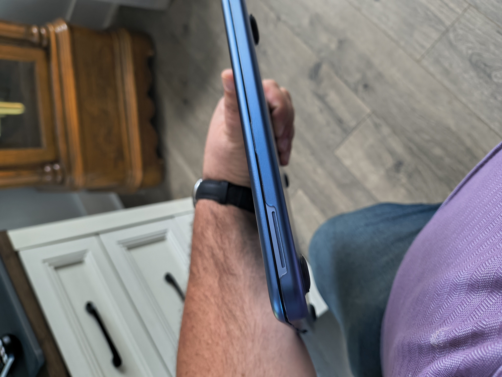
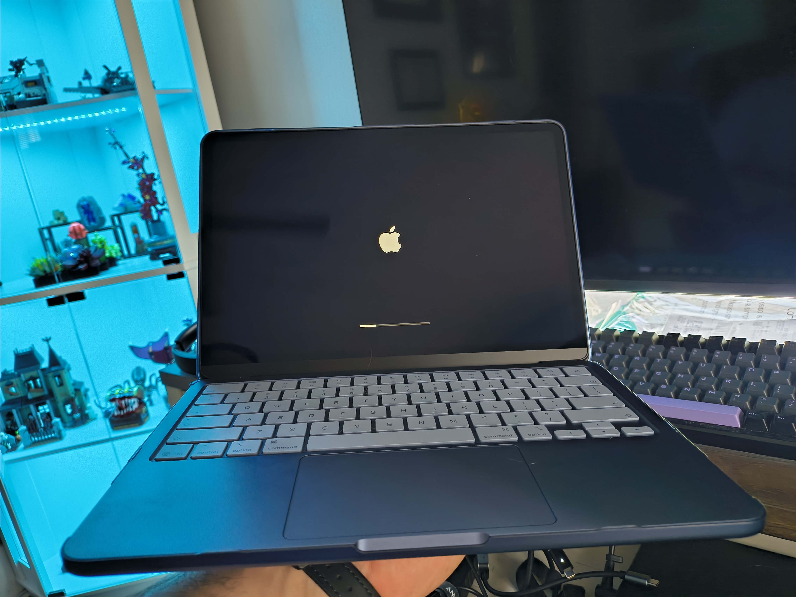
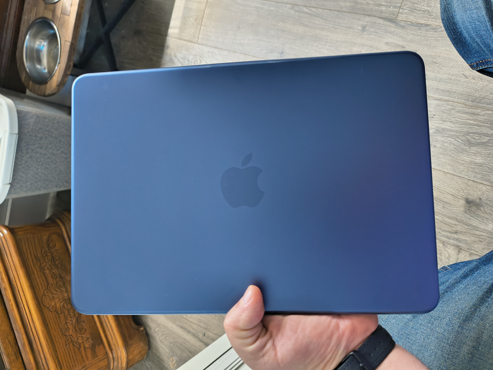

Captains Log

July 8th 2026
Case for Mac
I mentioned that I ordered a case for my Macbook. I received it and, I'll be honest it looks and feels pretty nice. I thought it would make it feel loose and kind of crappy. The nice thing is I ordered it from Amazon so if that was the case I know I can return it with basically no questions asked.
Luckily it doesn't seem like that will be the case... Get it...?! That will be the case?!




AI Bubble
I know that everyone hears a lot about AI all the time. As someone who works in tech, you would think that I would be more excited, but I'm not and have not been. I knew when every company started embracing and hyping it that definitely spelled bad news for most people.
Also I've been following AI for a long time. I was not then, and am not convinced now that it is where it has been hyped to be. What I mean is that everyone talked about how it was going to change the world and how people work. My experience with it is, it's still pretty dumb. Google has gotten worse since it integrated AI into its search and assistant.
A solid example of this is, when my wife and travel in the car and drive through a new town or city we will often ask Google what the population of said town/city is. Its not super critical or all that important, but should be a relatively easy search. It used to be that I could ask and shortly afteward I would get a result, often referencing the US Census data as evidence. Now? It will often tell me it doesn't understand. What?! It literally worked consistenly and quickly just a year ago.
With that said to me, it wasn't where marketing was selling it. Long before "vibe coding" became a thing I new I figured that industry would be hard hit by AI. Color me shocked, when that is a hard hit industry. The problem being; AI cannot implement that code or QA test it. So the industry still required more senior devs. The problem now is that companies like Microsoft, Google, Meta, etc, are all betting that AI gets good enough fast enought that by the time the Senior devs retire or quit, they wont be needed. Everyday it seems like that is less and less likely.
Now we are seeing that the chickens are coming home to roost! Microsoft is so heavily invested in AI that when the bubble bursts, and it will, it will cost them billions of dollars. Even politicians are starting to lose because of it. The Stuart Adams (Utah Senate President) lost and attirbutes this to his embracing of AI datacenters.
Unfotunately greedy publicly traded companies continue to put their fingers in their ears and yell. The writing is on the wall, and it is now nearly unavoidable. It's not there. The tech needs more time. The infrastructure is lacking. The cost is unsustainable.
Grid Cube - Yes Again
I stated earlier that I received the full files for GridCube over the weeekend and began printing. I have been printing nearly non-stop since then. I have completed one side, of the first cube, the lid with handle, all the corner pieces, and the front corner/hinge.
I am flying through filament though, and I'm going to have ask Katie if I can buy more...again... But it looks really cool so far!
When I printed the handle and the handle housing I had to screw them into the top lid via screws. The #4 screws appear to be working well, but I ran into a small issue when scrwing in the handle housing to the lid. The housing has some holes open for screws and they hold the top panels together. The problem is that two screws on the same side as the handle, toward what I would call the bottom of the housing, but you have to screw the handle in first, then feed screws through a hole in the handle and then into the top panels. The problem is that to get a screw in there you have to go in at an angle, because you can't get a screw driver flush with the whole. As you can imagine a 3d printed panel isn't super thick so one of 2 screws went in, but not all the way. The second screw went in, then out the back of the housing and didn't bite into the panel at all.
Still I thin it will be sturdy enough, and worse case scenario I can reprint things. I just have to tell Katie I'm goign to buy more filament. I also need more resin!